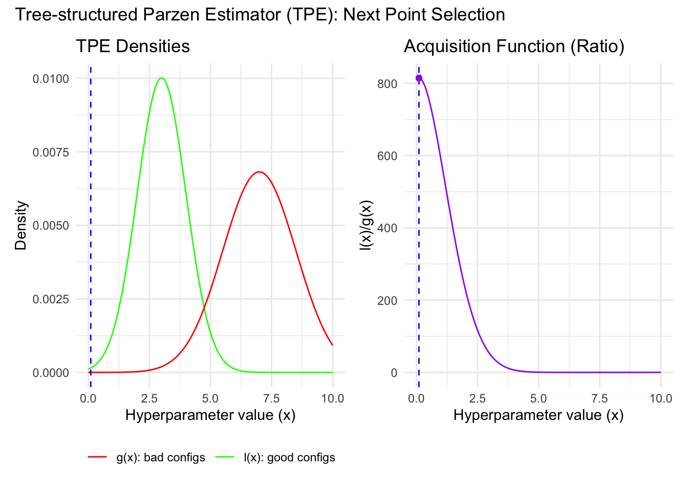

Under active development. A stable version is expected in November 2026. Feedback is welcome by email or via GitHub issues.
14 Advanced Hyperparameter Optimization
14.1 Overview
Hyperparameter optimization (HPO) chooses settings such as tree depth, minimum leaf size, or a neural network’s learning rate. These hyperparameters govern how a model is fitted; its parameters, such as regression coefficients or tree leaf values, are estimated from the training data for a given configuration.
Each configuration requires fitting and validation, so a large search can be computationally expensive. Searching also creates selection bias: a configuration can win partly because its validation loss happens to underestimate its generalization risk. This chapter studies how to allocate a limited evaluation “budget” while keeping selection separate from assessment.
We build on the Cross Validation chapter, comparing grid and random search with methods that use earlier evaluations or partial training runs to guide the search. A credit-default application compares two search strategies under a common evaluation budget.
14.2 Roadmap
We begin with why selecting the smallest validation loss can give an optimistic performance estimate.
Next we formalize HPO as the optimization of a noisy validation objective over a search space.
We compare baseline search methods with Bayesian optimization, which uses earlier evaluations to guide later trials.
We apply Gaussian-process Bayesian optimization to credit-default prediction and compare it with random search under the same trial budget.
We then study multi-fidelity methods, which compare configurations using cheap partial training runs before committing the full budget. Hyperband is the main example.
Finally, we summarize a practical workflow for choosing and validating tuning strategies in econometric work.
14.3 Why Reliable HPO Is Hard
Fix a loss function, a training sample, and a hyperparameter configuration \lambda, specifying one value for each setting. Let \hat f_\lambda be the resulting fitted model. We write c(\lambda)=R(\hat f_\lambda) for its generalization risk: the expected loss on a fresh observation, holding the fitted model fixed. As in the Cross Validation chapter, this risk is unknown; we compare configurations using validation losses.
Using validation loss to choose hyperparameters is the intended procedure. The problem arises when we also report the winning loss as an estimate of the selected model’s generalization risk. Selecting the smallest loss favors configurations whose risks happen to be underestimated, so the reported value can be optimistic on average even when each candidate’s estimate is unbiased before selection (Cawley and Talbot 2010; Varma and Simon 2006). The following calculation isolates this selection effect.
Selection Bias from Search
For a fixed collection of configurations \lambda_1,\ldots,\lambda_J, write c_j=c(\lambda_j) for configuration j’s generalization risk and suppose its validation estimate satisfies
Equality holds only if some fixed configuration attains the minimum validation loss almost surely, possibly tied with others. Exercise 2.1 of the Cross Validation chapter derives the two-model case using \hat R_A and \hat R_B.
Let \hat\jmath\in\arg\min_j\hat c_j be the selected index, using a rule fixed in advance to break ties, and write \hat\lambda=\lambda_{\hat\jmath}. Since the selected configuration’s risk satisfies c_{\hat\jmath}\ge\min_j c_j, we obtain
The left-hand side is the expected reported loss; the right-hand side is the expected risk of the selected configuration. Expectations are over repeated validation samples, with the fitted models and their risks held fixed. The comparison holds on average, so an individual reported loss can still exceed its model’s risk.
The same logic is visible in the stylized Figure 14.1. The selected configuration is the one with the lowest realized validation loss, but its blue point, which represents its generalization risk, sits above the red validation point.
Figure 14.1: Illustration of selection bias from hyperparameter search. The horizontal axis indexes 20 candidate configurations. The blue line shows each configuration’s generalization risk, the red line shows a noisy validation estimate, and the dashed vertical line marks the configuration selected by minimizing validation loss. For the selected configuration, the realized validation loss lies below the generalization risk, illustrating how search can make the winner look too good.
Use an untouched test set or the outer folds of nested cross-validation for a separate performance assessment. Taking the validation design as given, we now turn to how the search chooses which hyperparameter configurations to evaluate.
14.4 HPO as an Optimization Problem
Write the hyperparameter vector as \lambda \in \Lambda, where \Lambda is the search space. For example, \lambda might contain tree depth, learning rate, minimum leaf size, and the number of boosting rounds. Assuming the minimum is attained, an ideal configuration satisfies
where c(\lambda)=R(\hat f_\lambda) is the generalization risk of the fitted model from the previous section. In practice we do not observe c(\lambda). The search instead evaluates a validation criterion \hat c(\lambda). When we use the pooled K-fold criterion, the notation translates directly:
Here D_k is validation fold k among the N observations, L is the chosen loss, and \hat f_\lambda^{-k} is fitted with configuration \lambda using all other folds, including preprocessing fitted only on those training observations. The folds, loss, and weighting are held fixed across configurations. Cross-validation constructs the criterion; the search algorithm chooses which configurations to evaluate.
The CV criterion evaluates models fitted with \lambda on smaller training samples. We use \hat c(\lambda) as an approximation to c(\lambda), the risk of the model fitted with the same configuration on the full training sample. The Cross Validation chapter explains this distinction in detail.
After evaluating \lambda_1,\ldots,\lambda_J\in\Lambda, the search returns \hat\lambda=\lambda_{\hat\jmath}, where \hat c_j=\hat c(\lambda_j) and \hat\jmath\in\arg\min_{1\le j\le J}\hat c_j uses the fixed tie-breaking rule. The ideal \lambda^\star minimizes unknown risk over \Lambda; \hat\lambda minimizes observed loss among the evaluated configurations. Repeating this search within each outer training sample gives the selections \hat\lambda_k in nested CV, which assesses the procedure with its specified search space, algorithm, and budget.
Evaluating \hat c(\lambda) requires fitting the model, and some coordinates of \lambda are integers or categories. Even continuous choices can produce a non-convex validation objective. We therefore study search methods that use function evaluations without requiring the derivatives used in parameter optimization.
A practical HPO problem therefore has four ingredients:
a search space\Lambda
an evaluation rule that produces \hat c(\lambda)
a search algorithm for proposing new \lambda
a compute budget limiting how many evaluations we can afford
If the preferred performance measure is larger-is-better, such as R^2 or a utility proxy, we can either maximize that measure directly or minimize its negative. The statistical issues are the same.
Search-space design matters. A search space that is too narrow cannot recover good configurations. A search space that is too wide wastes budget on implausible values.
14.5 Baseline Search Methods
Grid search evaluates every combination in a finite grid of hyperparameter values. It is straightforward for a small number of settings, but the number of combinations grows multiplicatively with the number of coordinates.
Random search samples configurations from specified distributions over the search space. Its advantage is clearest when only a few continuous hyperparameters strongly affect performance: each trial can explore new values along those coordinates, whereas a grid repeatedly uses the same values (Bergstra and Bengio 2012).
Figure 14.2 compares the two methods using 25 evaluations each. The grid uses five values along the important horizontal coordinate; random search explores 25 distinct values.
Figure 14.2: Stylized comparison of grid search and random search under low effective dimensionality. Each panel shows 25 evaluated configurations in a two-hyperparameter space. The shaded vertical band marks a narrow high-performance region in the important horizontal hyperparameter, while the vertical axis is less consequential. Random search produces more distinct draws along the important direction than the equally sized grid.
The grid spends evaluations varying the less important coordinate while holding the important one fixed. Random search spreads its trials across more values of the important coordinate. Its independent trials also make parallel evaluation straightforward.
14.6 Bayesian Optimization
Bayesian optimization (BO) uses completed trials to choose the next configuration. It fits a surrogate model that maps hyperparameter settings to validation losses. The prediction model still maps economic predictors to outcomes; evaluating a new configuration requires fitting and validating that model (Snoek, Larochelle, and Adams 2012).
First fix the data splits, preprocessing rules, and fitting seed so that repeating a configuration gives the same loss \hat c(\lambda). The surrogate learns this fixed validation surface at unevaluated configurations. The surface is itself a noisy estimate of the generalization risk c(\lambda); a GP can model that measurement error, but for brevity we ignore it and treat the fixed validation surface as the object of the search.
A Gaussian process over the validation surface. We describe uncertainty about the fixed validation surface using a probability distribution over possible functions.
Definition: Gaussian Process
A Gaussian process (GP) is a collection of random variables C(\lambda), one for each configuration \lambda\in\Lambda. Its defining property is the following: choose any finite number of configurations \lambda_1,\ldots,\lambda_n and collect the corresponding random function values C(\lambda_1),\ldots,C(\lambda_n) into a vector. That vector must have a multivariate normal distribution, regardless of how many configurations we choose or where they lie in the search space (Rasmussen and Williams 2006, chap. 2).
We use a constant prior mean \mu and a covariance kernelk(\lambda,\lambda'), which gives the prior covariance between function values at two configurations. For any integer n\ge1 and any configurations \lambda_1,\ldots,\lambda_n\in\Lambda,
where \mathbf 1_n is an n-vector of ones. The kernel must produce a symmetric, positive semidefinite covariance matrix for every such choice of configurations.
At one configuration, the GP gives a distribution over possible losses; across configurations, it describes uncertainty about an entire validation-loss function. We use C(\lambda) to represent uncertainty about the fixed loss \hat c(\lambda) at an unevaluated configuration.
To picture a draw from the GP, suppose the learning rate is the only hyperparameter. Choose a grid of learning rates and draw one vector from the multivariate normal distribution above. Each entry is a possible loss at the corresponding learning rate. Plotting these entries against the learning rates gives the values of one possible validation-loss curve on the grid. A second joint draw gives another possible curve. The kernel determines how the losses at different learning rates vary together across draws.
For one continuous hyperparameter, a concrete choice is the squared-exponential kernel
Here \sigma_0 is the prior standard deviation of a function value, and the length scale\rho controls how far information travels along the hyperparameter axis. Settings separated by \rho have prior correlation \exp(-1/2)\approx0.61. A larger \rho makes the model relate more distant settings strongly. With several coordinates, the exponent can sum squared distances scaled by a separate length scale for each coordinate.
From completed trials to predictions. After t evaluations, the archive is
The index t counts search trials. Collect the observed losses in the t-vector \hat{\mathbf c}_t, and write \mathbf 1_t for a t-vector of ones. The t\times t matrix K_t has entries k(\lambda_i,\lambda_j); the t-vector \mathbf k_t(\lambda) has entries k(\lambda_j,\lambda). Thus K_t relates completed trials to each other, while \mathbf k_t(\lambda) relates them to the candidate. If \mathbf C_t=(C(\lambda_1),\ldots,C(\lambda_t))^\top, the joint prior is
Condition on \mathbf C_t=\hat{\mathbf c}_t. For fixed prior parameters and nonsingular K_t, the usual multivariate Gaussian-conditioning formula gives (Rasmussen and Williams 2006, chap. 2)
The posterior mean updates the prior using the observed losses; the posterior variance falls as related configurations provide information. At an evaluated setting, noise-free conditioning gives m_t(\lambda_j)=\hat c_j and s_t(\lambda_j)=0. Far from the evaluated settings under this kernel, predictions return toward the prior mean and variance.
We hold the surrogate’s mean \mu and kernel parameters \sigma_0 and \rho fixed in the example. They can also be estimated from the Gaussian likelihood of the archived losses. In code, compute the predictions by solving linear systems involving K_t.
Choosing the next expensive evaluation. The incumbent is the best evaluated configuration, with loss c_{\min,t}=\min_{1\le j\le t}\hat c_j. An acquisition function ranks candidates using the surrogate. For minimization, expected improvement (EI) is
Improvement is positive only when the unknown loss beats the incumbent. A candidate with a low predicted loss can improve the incumbent, but so can a less promising candidate whose uncertainty leaves enough probability of a much lower loss. EI therefore balances exploitation, pursuing low predicted losses, and exploration, evaluating uncertain configurations (Jones, Schonlau, and Welch 1998; Snoek, Larochelle, and Adams 2012).
Expected Improvement Under a Gaussian Surrogate
For C(\lambda)\mid\mathcal D_t\sim\mathcal N(m_t(\lambda),s_t(\lambda)^2) and s_t(\lambda)>0,
and \Phi and \phi denote the standard normal cumulative distribution function (CDF) and probability density function (PDF). If s_t(\lambda)=0, the appropriate limit is
Specify the search space, validation rule, and total evaluation budget. Choose a GP mean and kernel appropriate to the search space.
Evaluate several initial configurations sampled across the search space. Each trial fits the prediction model and records its validation loss in \mathcal D_t.
Condition the GP on the archive to obtain m_t(\lambda) and s_t(\lambda) for unevaluated candidates.
Compute EI and choose \lambda_{t+1}\in\arg\max_{\lambda\in\Lambda}\operatorname{EI}_t(\lambda), using a fixed rule to break ties. A grid or candidate pool provides an approximate maximization over a continuous space; optimizing EI requires only surrogate calculations.
Fit and validate the prediction model at \lambda_{t+1}, append its observed loss to the archive, and repeat Steps 3–5 until the evaluation budget is exhausted.
Select \hat\lambda, the evaluated configuration with the lowest observed validation loss, using the fixed tie-breaking rule. Refit the prediction model with \hat\lambda on all observations used for training and validation, then evaluate it once on the held-out test sample.
The next trial maximizes EI; the final selection minimizes observed validation loss. One trial requires a separate model fit for each validation fold.
Example: One Complete GP-BO Iteration
Suppose we tune one hyperparameter \lambda\in[0,1] of a forecasting model, holding all other model settings fixed. Use illustrative validation losses from two completed trials: \hat c(0.25)=0.55 and \hat c(0.75)=0.50. Set \mu=0.60, \sigma_0=0.10, and \rho=0.25. The covariance matrix is
For the next trial, consider the eleven candidates on the grid \{0,0.1,\ldots,1\}. We illustrate the calculation at \lambda=0.6, where the covariance vector is approximately
Using the unrounded predictions and c_{\min,2}=0.50, we obtain z_2(0.6)\approx-0.1397 and \operatorname{EI}_2(0.6)\approx0.01605. The table lists the predictions and EI for every candidate:
Candidate \lambda
Posterior mean
Posterior standard deviation
EI
0.0
0.5764
0.0792
0.00705
0.1
0.5657
0.0544
0.00300
0.2
0.5551
0.0193
0.00001
0.3
0.5448
0.0187
0.00005
0.4
0.5333
0.0482
0.00698
0.5
0.5199
0.0593
0.01505
0.6
0.5067
0.0482
0.01605
0.7
0.4996
0.0187
0.00767
0.8
0.5036
0.0193
0.00603
0.9
0.5194
0.0544
0.01337
1.0
0.5420
0.0792
0.01494
The largest EI on this grid is 0.01605 at \lambda=0.6, so we fit and validate the forecasting model at that configuration. Suppose the observed loss is 0.46. Append (0.6,0.46) to \mathcal D_2, update the incumbent to 0.46, and condition the GP on all three trials. The new GP interpolates 0.46 at 0.6, where its posterior standard deviation and EI are zero. Its predictions and EI elsewhere also change, determining the following trial.
Figure 14.3 carries out this iteration using the stated kernel and observations. Compare the posterior uncertainty at the selected point before and after its loss is observed, then compare the two EI curves.
Figure 14.3: One GP-BO iteration for illustrative validation losses over a single hyperparameter ranging from 0 to 1. The left column conditions a squared-exponential GP on two trials; the right adds the observed loss 0.46 at the selected configuration 0.6. Top panels show posterior means in blue, pointwise 95% posterior bands, completed trials as black circles, and the incumbent loss as a red horizontal line. The new trial is an orange diamond. Bottom panels show EI at the eleven grid candidates as green circles with spacing 0.1; connecting lines guide the eye. Gray vertical lines mark the selected configuration. The prior mean is 0.60, prior standard deviation is 0.10, and length scale is 0.25 in both columns.
Before evaluating 0.6, its uncertainty gives it the largest EI among the eleven candidates despite a posterior mean above the incumbent loss. After evaluation, the GP interpolates the new loss and its uncertainty contracts. EI changes both because of the new information and because the incumbent falls to 0.46.
Question for Reflection
A GP is fitted to 12 completed trials and predicts losses at 2,500 unevaluated candidate configurations. How many new fits of the forecasting model are needed to compute all 2,500 EI values? What must happen before the archive can contain a thirteenth trial?
Suggested Answer
No new forecasting-model fits are needed to compute EI. A thirteenth trial requires fitting and validating the model at the chosen configuration, then recording its observed loss. With cross-validation, that trial requires one fit per fold.
GP BO is most useful when evaluations are expensive and a modest search dimension lets the surrogate learn from a small archive. Sequential proposals limit immediate parallelism. The application below uses the fixed validation surface.
The kernel needs additional care in two situations. A search space is mixed if it combines continuous, integer-valued, and categorical hyperparameters. A conditional hyperparameter is active only for some values of another hyperparameter. Suppose we tune a feed-forward neural network: the learning rate is continuous, the number of hidden layers is an integer, the activation function is categorical, and the width (number of units) of the second hidden layer is active only if the network has at least two hidden layers.
The squared-exponential kernel relates two configurations through the distances between their coordinates. Two activation functions have no natural distance, and a one-layer network has no second-layer width to compare.
One practical approach is to run a separate GP search for each combination of activation function and number of hidden layers. For example, suppose we allow sigmoid or hyperbolic tangent activation and either one or two hidden layers. The four searches are:
Activation function
Hidden layers
Hyperparameters tuned by the GP
Sigmoid
1
Learning rate and width of the first layer
Sigmoid
2
Learning rate and widths of both layers
Hyperbolic tangent
1
Learning rate and width of the first layer
Hyperbolic tangent
2
Learning rate and widths of both layers
Within each row, the activation function and number of layers stay fixed. The GP proposes learning rates and layer widths, with widths rounded to integers before fitting the network. Each GP learns from the validation losses collected in its own search. Use the same validation rule in all four searches, then select the configuration with the lowest observed validation loss across them.
The four rows form a small grid over the activation function and layer count. With a total budget of 100 evaluations divided equally, each GP receives 25 trials. As the number of combinations grows, fewer trials remain for learning each validation-loss function. This approach is therefore most useful when there are few combinations. The next method allocates trials adaptively across these combinations.
Tree-structured Parzen estimator (TPE). TPE guides the search by comparing configurations with low and high observed losses. Write \widehat C for a trial’s random observed validation loss and c for its realized value. The validation surface \hat c(\lambda) is a fixed function; \widehat C is random because the trial’s configuration is treated as a random draw. A threshold c^\ast separates the good and bad trials. If the distribution of \widehat C across trials is continuous, choosing c^\ast as its \gamma-quantile gives \mathbb{P}(\widehat C \le c^\ast)=\gamma. This condition concerns the distribution of losses, not continuity of \hat c in \lambda. In the algorithm below, the \gamma-quantile of the observed losses in the archive takes this role.
TPE fits a density of hyperparameters in each group:
\ell(\lambda) = p(\lambda \mid \widehat C \le c^\ast),
\qquad
g(\lambda) = p(\lambda \mid \widehat C > c^\ast).
The search idea is simple: propose candidates that look likely under the good-trial density and unlikely under the bad-trial density. Where both fitted densities are positive, this means favoring large values of the acquisition function
\frac{\ell(\lambda)}{g(\lambda)}.
Under the TPE construction, maximizing the density ratio is equivalent to maximizing expected improvement (Bergstra et al. 2011). Exercise 14.1 derives the relationship.
Fitting the densities. TPE fits each hyperparameter separately: for every hyperparameter and each group, a one-dimensional density of that hyperparameter’s values among the group’s trials (Bergstra et al. 2011, sec. 4.2). We present the fit for a continuous hyperparameter only. The fit is a Parzen estimator, another name for the kernel density estimator, with Gaussian kernels centered at the observed values.
Write \ell_q and g_q for the one-dimensional fits of hyperparameter q in the good and bad group, and \lambda^{(q)} for the value of hyperparameter q in a configuration \lambda; subscripts on \lambda remain reserved for trials. TPE models the joint densities as products,
so the ratio \ell(\lambda)/g(\lambda) is the product of the one-dimensional ratios \ell_q(\lambda^{(q)})/g_q(\lambda^{(q)}). The product is a modeling assumption: within a group, it treats the hyperparameters as independent, whereas the conditional density p(\lambda \mid \widehat C \le c^\ast) can carry dependence that the product form does not capture; for example, among the good trials, a small learning rate may go together with many boosting rounds.
TPE Algorithm
Evaluate an initial set of randomly sampled hyperparameter configurations.
Split the evaluated archive once into a good set and a bad set using a \gamma-quantile threshold on the observed validation losses, with an explicit rule for ties.
Fit \ell_q and g_q for every hyperparameter from the good and bad sets, and form \ell(\lambda) and g(\lambda) as the products over the hyperparameters.
Sample candidate configurations from the good density, as described in the collapsed box below, and rank them by the ratio \ell(\lambda)/g(\lambda).
Evaluate the candidate with the largest ratio, update the archive, and repeat until the budget is exhausted.
The tuning parameter \gamma controls how selective the “good” set is. Smaller \gamma focuses more aggressively on the currently best-performing trials.
Optional: Sampling from the Good-Trial Density
Step 4 of the algorithm draws candidates from \ell. Under the product model, a candidate is assembled from one draw per hyperparameter from its own one-dimensional fit \ell_q, so we describe one such draw. A kernel density estimate is an equally weighted mixture of densities, one per observation, and a draw from a mixture takes two stages: choose one component, then draw from that component. For a continuous hyperparameter q, let \mathcal G contain the indices of the good trials, with |\mathcal G|\ge1, and consider Gaussian kernels with a common bandwidth h>0 on the real line:
The bandwidth h controls the size of the perturbation around the selected center. Under the product model, repeat the two sampling steps independently for each hyperparameter, choosing a separate index I and Gaussian draw Z for each coordinate. Repeat this procedure to form the candidate pool.
Figure 14.4 displays the fitted good- and bad-trial curves and their ratio over a one-dimensional range. Compare the location of the good-trial mode with the marked ratio maximum: the two need not coincide.

Figure 14.4: Stylized TPE density-ratio illustration. The left panel shows the good-trial curve in green and the bad-trial curve in red; the right panel shows their ratio in purple. The horizontal coordinate x represents the hyperparameter \lambda, and the image’s l denotes \ell in the text. The blue dashed line and purple point mark the largest ratio on the displayed grid.
The ratio is largest near the left boundary because the bad-trial density is especially small there. Maximizing the good-trial density alone would choose a different point. The algorithm searches candidates sampled from \ell, so a region with little good-trial probability may be absent from a finite candidate set.
GP BO versus TPE. A single GP over the whole search space needs a kernel that assigns a covariance to every pair of configurations, including a one-layer and a two-layer network; the grid remedy above avoids this by fitting one GP per combination, at the cost of splitting the budget. TPE needs neither. Its extension to such spaces fits each hyperparameter on its own, and a conditional hyperparameter only where it is active, so no covariance between branches is required, and shared hyperparameters such as the learning rate are fitted from all trials in a group. The price is the independence assumption noted above.
Question for Reflection
Consider two settings. In (A), there are four continuous hyperparameters, 25 trials are allowed, each validation run takes 2 hours, and the validation objective is moderately noisy but reasonably smooth. In (B), the search space is mixed and contains twelve hyperparameters, some of them conditional; 500 trials are allowed, each run takes 10 seconds, and there is no strong reason to expect a smooth low-dimensional objective. In which setting is Gaussian-process Bayesian optimization more likely to improve on random search, and why is random search more defensible in the other?
Suggested Answer
In A, the smooth objective and four-dimensional search space give the GP useful structure, and each avoided evaluation saves 2 hours. In B, cheap evaluations favor broad, parallel random search, while the categorical and conditional hyperparameters complicate the GP kernel; a grid over those choices would split the 500 trials across its combinations and leave each GP a smaller archive. TPE could still learn from earlier trials in such a search space, so the comparison concerns GP BO specifically.
14.7 Worked Application: Bayesian HPO for Credit Default
We compare GP BO with random search on the Taiwan credit-card default data, previously used in the gradient-boosting chapter. The outcome is default in the month following the observed repayment histories. Both searches tune the same classifier with the same number of evaluations.
We retain the stratified 60% training, 20% validation, and 20% test split. Random splitting assesses prediction for exchangeable clients from this cohort. Because the test clients already appeared in the earlier model comparison, the test results here are descriptive follow-ups.
Search space and budget. Every trial fits a gradient-boosting classifier with 100 depth-2 trees. Hyperparameter optimization varies two quantities:
the learning rate over [0.01,0.20] on a logarithmic scale
the minimum number of training observations in a leaf over [10,400] on a logarithmic scale, rounded to an integer
Taking logarithms makes equal proportional changes in a hyperparameter have equal spacing: learning rates 0.01 and 0.02 are as far apart as 0.05 and 0.10 on the log scale. We then map each logarithmic search interval to [0,1] so that the GP’s length scales are measured as fractions of those intervals. For learning rate \nu, the corresponding GP coordinate is
Thus the lower bound 0.01 maps to 0, and the upper bound 0.20 maps to 1. Applying the same transformation with bounds 10 and 400 gives the second coordinate for minimum leaf size. Before fitting each model, we convert the proposed coordinates back to the original units and round the minimum leaf size to an integer.
Both methods receive 15 evaluations and share five initial random configurations. Random search draws ten more configurations independently. BO chooses each subsequent trial by maximizing EI over a fixed pool of 2,500 candidates, updating its GP after observing the new loss. Only the chosen candidate requires a new classifier fit. Both searches minimize validation log loss, with preprocessing fitted on the training sample.
The fixed split and classifier seed make \hat c(\lambda) repeatable, as in the GP-BO algorithm above. We use a Matérn kernel, whose smoothness parameter controls the regularity of the modeled function, with smoothness 2.5 and length scale 0.3 in each coordinate. The code standardizes the observed losses and adds a small diagonal regularizer for numerical stability. EI uses uncertainty about the fixed validation surface.
Figure 14.5 shows both where Bayesian optimization evaluates the objective and how quickly each method improves its incumbent validation loss.
Figure 14.5: Bayesian hyperparameter optimization for gradient-boosted credit-default probabilities. The left panel locates the 15 Bayesian-optimization trials by learning rate and minimum leaf size; circles are the five shared random initializations, squares are the ten expected-improvement proposals, color records validation log loss, and the star marks the selected configuration. Both axes use logarithmic scales. The right panel reports the lowest validation log loss found after each trial by Bayesian optimization and random search. Both methods start from the same five configurations and receive 15 evaluations in total.
In the left panel, BO concentrates on high learning rates after exploring the boundaries and intermediate leaf sizes. In the right panel, it improves on the shared initialization at evaluation six and reaches its best validation loss at evaluation seven. Random search finds no improvement in its ten additional trials. This is one search path under one seed.
After tuning, each selected configuration is refitted on the combined training and validation observations. The table reports its search loss and three descriptive test metrics. The Brier score is the mean squared error of a binary probability forecast, N_{\mathrm{test}}^{-1}\sum_{i=1}^{N_{\mathrm{test}}}(y_i-\hat p_i)^2.
Table 14.1: Selected gradient-boosting configurations and performance for Bayesian optimization and random search on the Taiwan credit-card default data. Both searches share five random initializations and receive 15 validation evaluations. Each selected model is refitted on the 24,000 clients in the combined training and validation sample before evaluation on the previously used 6,000-client test sample. Lower validation log loss, test log loss, and Brier score are better; higher accuracy under the 0.5 threshold is better.
Learning rate
Minimum leaf size
Validation log loss
Test log loss
Brier score
Accuracy at 0.5
Search method
Bayesian optimization
0.2000
94
0.4309
0.4320
0.1358
0.8168
Random search
0.1285
37
0.4311
0.4322
0.1357
0.8162
BO selects learning rate 0.2000 and minimum leaf size 94; random search selects approximately 0.1285 and 37. BO achieves a lower validation log loss, but test log loss improves only from 0.4322 to 0.4320. The test Brier score slightly favors random search, by less than 0.0001. Log loss and the Brier score weight probability errors differently, so two fitted models can receive different rankings. The clearest result here is the faster improvement in validation loss, with little separation in test performance.
14.8 Multi-Fidelity Search
Multi-fidelity search evaluates configurations at different resource levels, such as training epochs, sample sizes, or boosting rounds. The resource level is the fidelity of an evaluation: the validation loss after a partial run is a cheap but imperfect proxy for the loss after full training, which is the quantity the search is meant to minimize. A multi-fidelity method is a rule for which configurations are evaluated at which fidelity, and it uses the cheap proxies to screen candidates before committing to full training. Successive halving is the basic rule, and Hyperband below is a family of successive-halving runs.
Successive halving starts with many configurations at a small resource level r. It retains the best fraction 1/\eta by validation loss, raises their total resource to \eta r, and repeats, so each survivor is evaluated at successively higher fidelity.
For early screening to retain strong configurations, the ranking at low fidelity must be informative about the ranking after full training.
Successive Halving Algorithm
Let p^{[0]} be a positive integer giving the initial number of configurations and let r^{[0]}>0 be the resource allocated to each configuration before the first screening step.
For example, suppose p^{[0]}=27 and r^{[0]}=3 epochs. Train each of the 27 models for 3 epochs. Then compare their validation losses.
Choose an integer \eta\ge2. At each screening step, retain the best 1/\eta of the configurations, rounding the number retained down to an integer. For example, with \eta=3, keep the best 9 of the 27 configurations.
Choose a nonnegative integer T_{\mathrm{SH}}, the planned index of the last round, so that the final resource r^{[0]}\eta^{T_{\mathrm{SH}}} reaches the desired training budget per configuration. In the example above, choosing a full training budget of 81 epochs gives T_{\mathrm{SH}}=3: four evaluation rounds at 3, 9, 27, and 81 epochs, with three screening steps.
Choose resource levels that are feasible for the training procedure and specify a fixed rule for breaking tied validation losses. Each round is called a rung, the resource levels forming a ladder that the surviving configurations climb; start at round t=0.
At round t, evaluate the current p^{[t]} configurations at total resource r^{[t]} and rank them by validation loss.
If t=T_{\mathrm{SH}}, fewer than \eta configurations remain, or the next rung would exceed the budget, stop and return the lowest-loss configuration evaluated at this rung, using the stated tie rule.
Otherwise retain the best p^{[t+1]} configurations, where
p^{[t+1]}=\left\lfloor\frac{p^{[t]}}{\eta}\right\rfloor,
\qquad
r^{[t+1]}=\eta r^{[t]}.
Advance to round t+1 and repeat. Stopping before another elimination ensures that the final evaluated survivor is retained.
We count resource use in configuration–resource units: evaluating p configurations at resource level r uses pr units. Restarting uses p^{[t]}r^{[t]} units in round t. When a checkpoint allows training to resume by adding only the resource increment, continuation uses p^{[0]}r^{[0]} units initially and p^{[t]}(r^{[t]}-r^{[t-1]}) in each later round. These totals are proportional to computation when a resource unit has comparable cost across configurations and resource levels. When the resource is sample size, computational cost depends on the fitting procedure and whether increasing the sample requires refitting.
Successive halving leaves one choice open: the initial resource r^{[0]}. A small r^{[0]} screens many configurations for a given budget but eliminates slow-starting ones before they reveal their quality; a large r^{[0]} protects them but affords fewer candidates. Which is better depends on how informative early rankings are, and that is unknown before the search. Hyperband replaces the choice by a sweep: it runs several successive-halving schedules, called brackets, with different initial numbers of configurations and resource levels, so that some brackets screen many configurations cheaply while others give fewer configurations more training before eliminating any (Li et al. 2018).
Hyperband as a Family of Brackets
Measure resources in units of the minimum admissible allocation, so that the minimum resource is 1. Let R_{\max}\ge1 be the maximum resource per configuration in those units and let \eta\ge2 be an integer elimination rate. Define
s_{\max} = \left\lfloor \log_{\eta}(R_{\max}) \right\rfloor,
\qquad
B = (s_{\max}+1)R_{\max}.
Here B is the nominal resource budget per bracket under restarting, corresponding to s_{\max}+1 full training runs. Rounding the configuration counts can change the allocated total. A sweep of all s_{\max}+1 brackets uses approximately (s_{\max}+1)B configuration–resource units under restarting. Checkpoint continuation uses the incremental resource amounts above.
Hyperband then runs several successive-halving brackets indexed by s=s_{\max},\ldots,0, with t indexing the rounds within each bracket. A common parameterization is
For each bracket s, draw a fresh sample of n_s configurations from the distributions used for random search. Run successive halving with p^{[0]}=n_s, r^{[0]}=r_s, and T_{\mathrm{SH}}=s, allocating the resources needed to complete all s+1 rungs. The final rung evaluates the survivors at R_{\max}. Large-s brackets explore many configurations cheaply, while small-s brackets explore fewer configurations more deeply from the start.
Use the same validation design and loss throughout. In the version presented here, select the configuration with the lowest validation loss among all configurations evaluated at R_{\max}, using the fixed tie rule.
Figure 14.6 shows three of the four brackets for R_{\max}=27 and \eta=3, giving s_{\max}=3 and B=108. Each row follows one bracket from its first rung to its last; each box reports how many configurations are evaluated at that rung and the resource level each of them has received.
Figure 14.6: Three of the four Hyperband brackets for R_{\max}=27 and \eta=3, which give s_{\max}=3 and B=108. Each rounded box reports the number of surviving configurations at a rung and the total resource level reached by each one. Starting counts follow the formula above: n_3=27, n_2=12, and n_1=6 (the omitted bracket s=0 evaluates n_0=4 configurations at the full level 27 with no elimination). Moving from left to right within a bracket, configurations are eliminated at rate \eta and the resource level per survivor is multiplied by \eta. Under restarting, the three displayed brackets allocate 108, 99, and 108 configuration–resource units.
The brackets share the elimination rate and the final resource level R_{\max}=27; they differ in where they start. As s falls from 3 to 0, the starting counts fall from 27 to 12, 6, and 4, while the initial resource levels rise from 1 to 3, 9, and 27. The number of elimination rounds falls from three to zero, and the number of configurations that receive full training rises from 1 to 4.
The wide bracket (s=3) screens 27 configurations and makes its first elimination after one resource unit. A slow-starting configuration may be discarded before it reveals its quality. The deep bracket (s=1) gives each of its six candidates nine resource units before its first elimination, allowing more time for a slow starter to reveal its quality. The benefit depends on how informative the rankings become with additional training. The omitted bracket s=0 trains four randomly sampled configurations fully, avoiding early elimination for those candidates.
Under restarting, the four brackets allocate 108, 99, 108, and 108 configuration–resource units. Hyperband thus spreads roughly equal nominal resource budgets across broad screening, later screening, and a small set of fully trained random candidates.
Unreliable early rankings. A slow-starting model may need a larger initial training budget to reveal its quality. A short validation block creates a different problem: noisy loss estimates can discard a good configuration even if it is sufficiently trained. More informative validation losses address that uncertainty. Exercise 14.2 separates these two sources of screening error.
Set the search space and budget. Restrict configurations to plausible values and decide how many evaluations or training resources are available.
Establish a random-search baseline. Use the same validation criterion and budget when comparing it with BO.
Choose how to spend further computation. GP BO uses a learned loss surface, TPE compares good and bad trial densities, and Hyperband screens configurations with partial training runs.
Refit and assess. Refit the selected configuration on all observations used for training and validation and evaluate it once on untouched test data, or repeat tuning and refitting within each outer training sample of nested CV.
Very small spaces with a few interpretable settings
Random search
Samples combinations independently of earlier trial outcomes
Easy
No
Cheap evaluations or abundant parallel compute
GP Bayesian optimization
Can exploit smooth structure in a modest continuous space
Usually sequential; batching is possible
No
Expensive evaluations and a tight trial budget
TPE
Uses earlier trials in mixed search spaces and with conditional hyperparameters
Some parallelism is possible
No
Mixed search spaces or conditional hyperparameters
Hyperband
Avoids many full-resource evaluations when early rankings are informative
Easy within rungs
Yes
Expensive training jobs with informative partial learning curves
14.10 Summary
Key Takeaways
Hyperparameter optimization chooses model settings using a noisy estimate of out-of-sample performance.
Random search provides a baseline by sampling from the specified search space.
Bayesian optimization uses completed evaluations to guide the choice of subsequent trials.
Successive halving and Hyperband allocate more computation to configurations that survive cheaper partial evaluations.
Common Pitfalls
Repeatedly consulting the test set turns it into another tuning criterion just as in simple cross-validation.
If you need to tune many hyperparameters, it may be better to reduce the search space by choosing a simpler model than to rely on a more sophisticated search method. If the signal-to-noise ratio is low, advanced hyperparameter optimization may not improve on random search.
Aggressive early pruning can discard slow configurations that would perform well with a larger training budget.
14.11 Exercises
Exercise 14.1: Gaussian-Process Bayesian Optimization and TPE
Suppose you are tuning a forecasting model with four hyperparameters: learning_rate, max_depth, min_samples_leaf, and subsample. Each model evaluation requires a full rolling-window validation exercise and is therefore expensive.
Derive the closed form of expected improvement. Under the Gaussian surrogate C(\lambda)\mid\mathcal{D}_t \sim \mathcal{N}(m,s^2) with s>0—writing m=m_t(\lambda), s=s_t(\lambda), and c_{\min}=c_{\min,t} to keep the algebra light—start from the definition
\operatorname{EI}(\lambda)=\mathbb{E}\big[\max\{c_{\min}-C(\lambda),0\}\mid\mathcal{D}_t\big]
and show that
\operatorname{EI}(\lambda) = (c_{\min}-m)\Phi(z) + s\,\phi(z),
\qquad z=\frac{c_{\min}-m}{s}.
In the closed form from Part 1, identify the term that rewards a low predicted loss and the term that rewards uncertainty. What happens to \operatorname{EI} as s\downarrow 0 with m>c_{\min} held fixed?
In a Gaussian-process BO scheme, the current best observed validation loss is c_{\min}=0.45. The surrogate model predicts:
Configuration A: posterior mean m_A=0.42, posterior standard deviation s_A=0.01.
Configuration B: posterior mean m_B=0.47, posterior standard deviation s_B=0.10.
Expected improvement is
\mathrm{EI}(\lambda)=s\left[z\,\Phi(z)+\phi(z)\right],
\qquad
z=\frac{c_{\min}-m}{s},
where \Phi and \phi are the standard normal CDF and PDF. Using \Phi(3)\approx 0.999, \phi(3)\approx 0.004, \Phi(-0.2)\approx 0.421, and \phi(-0.2)\approx 0.391, compute \mathrm{EI} for both configurations and explain which one the acquisition function prefers.
Show why TPE ranks candidates by the density ratio. TPE models the trials as p(\lambda \mid c) = \ell(\lambda) if c \le c^\ast and g(\lambda) if c > c^\ast, with \mathbb{P}(\widehat C \le c^\ast) = \gamma for the random observed validation loss \widehat C. Assume 0<\gamma<1, positive fitted densities at the candidate, and a continuous loss distribution with no mass at c^\ast. Using p(\lambda) = \gamma\,\ell(\lambda) + (1-\gamma)\,g(\lambda) and the definition
\operatorname{EI}(\lambda) = \int_{-\infty}^{c^\ast} (c^\ast - c)\, p(c \mid \lambda)\, dc,
together with Bayes’ rule p(c\mid\lambda) = p(\lambda\mid c)p(c)/p(\lambda), show that
\operatorname{EI}(\lambda)
=
\frac{A}{\gamma + (1-\gamma)\,g(\lambda)/\ell(\lambda)}
for a positive constant A that does not depend on \lambda. Conclude that maximizing \operatorname{EI} is equivalent to maximizing \ell(\lambda)/g(\lambda). As a brief check of your ranking rule, identify the preferred candidate when the three ratios are 1.2, 2.8, and 0.9.
Give two conditions favoring Gaussian-process BO over random search under a limited evaluation budget, and one condition favoring random search.
Exam-level. Parts 1 and 4 derive the Gaussian closed form and TPE density-ratio criterion. Parts 2 and 3 interpret or apply EI, and Part 5 connects the search method to the evaluation budget and search space.
Hint for Part 1
Standardize first: write C = m + sZ so the expectation becomes an integral against the standard normal density over the region where the improvement is positive. For the harder of the two resulting integrals, use the fact that the standard normal density satisfies \phi'(u) = -u\,\phi(u).
Hint for Part 4
Over the whole region of integration c \le c^\ast, the conditional density p(\lambda\mid c) equals \ell(\lambda) and does not depend on c—so it factors out of the integral, leaving something that does not involve \lambda at all.
Solution
Part 1: The Gaussian closed form
Write C = m + sZ with Z \sim \mathcal{N}(0,1). Then c_{\min} - C = s(z - Z) with z = (c_{\min}-m)/s, and since s>0,
Part 2: Exploitation, exploration, and the zero-uncertainty limit
The first term, (c_{\min}-m)\Phi(z), is the exploitation term: it is large when the predicted loss m sits below the incumbent, weighted by the probability of improving. The second term, s\phi(z), is the exploration term: it reflects posterior uncertainty.
As s \downarrow 0 with m > c_{\min} fixed, we have z \to -\infty, so \operatorname{EI} \to 0. A point the surrogate is certain is worse than the incumbent has no expected improvement.
Configuration B has slightly higher EI despite its worse posterior mean. Its uncertainty gives it enough probability of a large improvement to outweigh A’s lower predicted loss.
Part 4: The TPE density-ratio criterion
Apply Bayes’ rule inside the integral. Since p(c\mid\lambda) = p(\lambda\mid c)p(c)/p(\lambda) and p(\lambda\mid c) = \ell(\lambda) throughout the region c \le c^\ast,
where A>0 depends only on c^\ast and the marginal distribution of the losses, not on \lambda. Substituting the mixture p(\lambda) = \gamma\ell(\lambda) + (1-\gamma)g(\lambda) and dividing numerator and denominator by the positive \ell(\lambda),
Because A>0 and \gamma \in (0,1), the right-hand side is strictly increasing in \ell(\lambda)/g(\lambda). Maximizing expected improvement is therefore equivalent to maximizing the density ratio under the stated idealized assumptions.
The second candidate has the largest ratio, 2.8, so TPE evaluates it next.
Part 5: Choosing between GP BO and random search
Two conditions favor GP BO: evaluations are expensive, so each saved trial matters; and the loss surface is smooth in a modest-dimensional space, so the GP can learn from few trials.
Random search may be preferable when evaluations are cheap and many can run in parallel. It is also useful when the chosen GP kernel provides little information about unevaluated settings.
Exercise 14.2: Hyperband Under Noisy Learning Curves
A neural network predicts future firm default probabilities from panel data. A full training run takes 81 epochs. A successive-halving bracket with elimination rate \eta=3 starts with 27 configurations at 3 epochs. In Part 1, promoted models continue training from where the previous round ended.
To study screening errors separately from the full bracket, consider a two-configuration comparison in which only the configuration with the smaller early validation loss is promoted. Configuration A has lower full-budget generalization risk than B, with difference \Delta=c_A-c_B=-0.02. At each validation date j, let D_j be A’s average loss across the validation firms minus B’s average loss across the same firms. Use the stylized Gaussian model
D_j=\Delta+b+u_j,
where b is the relative disadvantage of A from evaluating both models before training is complete. The mean-zero errors u_j are jointly Gaussian with variance \tau^2>0. Use n consecutive validation dates and let \bar D_n=n^{-1}\sum_{j=1}^n D_j. Configuration A is discarded when \bar D_n>0. Under the covariance assumptions in Parts 2 and 3, equality has probability zero.
Give the number of configurations and the total epoch level at each rung. Calculate the total training cost, counting the initial epochs for all configurations and the additional epochs for promoted configurations. Compare this total with training all 27 configurations to 81 epochs. Then take the wide (s=3) and deep (s=1) brackets of Figure 14.6, which both cost 108 resource units when every model is trained from scratch at each round, and compute their costs when surviving models continue their earlier training.
First assume the u_j are independent. Derive the probability that the better full-budget configuration A is discarded, expressing it using \Phi. Compare its limit as n\to\infty when b=0 and when b=0.03. Does a longer validation window necessarily repair the disadvantage of a slow-starting model?
Now set b=0 and allow serial dependence, with \operatorname{Cov}(u_j,u_{j+h})=\tau^2\rho^h for h\ge1 and 0\le\rho<1. Derive \operatorname{Var}(\bar D_n) by counting pairs at each lag, and hence the discard probability. For fixed n>1, explain how positive correlation changes that probability relative to the independent case. Distinguish what a larger initial training budget addresses from what a longer or more informative validation window addresses.
Exam level. Part 1 compares training from scratch at every round with continuing earlier training. Parts 2 and 3 derive screening-error probabilities and separate slow learning from serially dependent validation noise. Answers may be left in terms of the standard normal CDF; no probability tables or code are required.
Hint for Part 3
At lag h, there are n-h distinct pairs of validation dates. Each covariance enters the variance of the sum twice.
Solution
Part 1: Schedule and total training cost
The successive rungs are 27 configurations at 3 epochs, 9 at 9 epochs, 3 at 27 epochs, and 1 at 81 epochs. Each total epoch level includes training already completed. Thus
\begin{aligned}
\text{total training cost}
&=27\times3+9\times(9-3)+3\times(27-9)+1\times(81-27)\\
&=81+54+54+54\\
&=243
\end{aligned}
configuration-epochs. Training every initial configuration fully costs 27\times81=2{,}187 configuration-epochs. Continuing the surviving models’ earlier training therefore uses one ninth of that total. These are computational costs, not elapsed times under parallel execution.
For the wide bracket of Figure 14.6, continuing earlier training costs
resource units; for the deep bracket it costs 6\times9+2\times(27-9)=90. Training from scratch at each round costs 27+27+27+27=108 and 54+54=108. Equal costs under from-scratch training therefore do not imply equal costs under continuation; the saving is larger for the bracket with more rounds, because every round after the first adds only the increment in resource for the survivors.
When b=0, the mean difference is -0.02, and the discard probability tends to zero. With b=0.03, the early mean difference is 0.01, and the probability tends to one. More validation dates make the early ranking more precise, but that ranking systematically favors B when A’s slow-starting disadvantage exceeds its full-budget advantage. Increasing validation precision alone cannot correct that reversal.
Part 3: Serially dependent validation losses
There are n variance terms and n-h pairs at lag h, so
For n>1 and \rho>0, the variance exceeds \tau^2/n. Since \Delta<0, the argument of \Phi moves toward zero, increasing the discard probability toward one half relative to independence.
In both parts, joint Gaussianity gives \bar D_n\sim\mathcal{N}(\Delta+b,\operatorname{Var}(\bar D_n)), so the discard probability is \Phi\big((\Delta+b)/\operatorname{sd}(\bar D_n)\big): Part 2 has \operatorname{sd}(\bar D_n)=\tau/\sqrt n, and Part 3 sets b=0 and lets serial dependence enlarge the standard deviation.
Using more validation dates reduces the standard deviation of the average loss difference \bar D_n. Positive serial correlation between the date-level loss differences reduces the information gained from additional dates.
Now return to the slow-starting case in Part 2, where b=0.03 and the expected early loss difference is \Delta+b=0.01. As the number of validation dates grows, \bar D_n concentrates around this positive value. Since A is discarded when \bar D_n>0, its discard probability approaches one.
More training before the first screening step can reduce A’s early disadvantage b. More validation dates make the estimate of the early loss difference more precise.
14.12 References
Bergstra, James, Remi Bardenet, Yoshua Bengio, and Balazs Kegl. 2011. “Algorithms for Hyper-Parameter Optimization.” In Advances in Neural Information Processing Systems 24, 2546–54.
Bergstra, James, and Yoshua Bengio. 2012. “Random Search for Hyper-Parameter Optimization.”Journal of Machine Learning Research 13: 281–305.
Cawley, Gavin C., and Nicola L. C. Talbot. 2010. “On over-Fitting in Model Selection and Subsequent Selection Bias in Performance Evaluation.”Journal of Machine Learning Research 11: 2079–2107.
Jones, Donald R., Matthias Schonlau, and William J. Welch. 1998. “Efficient Global Optimization of Expensive Black-Box Functions.”Journal of Global Optimization 13 (4): 455–92. https://doi.org/10.1023/A:1008306431147.
Li, Lisha, Kevin Jamieson, Giulia DeSalvo, Afshin Rostamizadeh, and Ameet Talwalkar. 2018. “Hyperband: A Novel Bandit-Based Approach to Hyperparameter Optimization.”Journal of Machine Learning Research 18 (185): 1–52.
Rasmussen, Carl Edward, and Christopher K. I. Williams. 2006. Gaussian Processes for Machine Learning. MIT Press. https://gaussianprocess.org/gpml/.
Snoek, Jasper, Hugo Larochelle, and Ryan P. Adams. 2012. “Practical Bayesian Optimization of Machine Learning Algorithms.” In Advances in Neural Information Processing Systems 25, 2951–59.
Varma, Sudhir, and Richard Simon. 2006. “Bias in Error Estimation When Using Cross-Validation for Model Selection.”BMC Bioinformatics 7: 91. https://doi.org/10.1186/1471-2105-7-91.